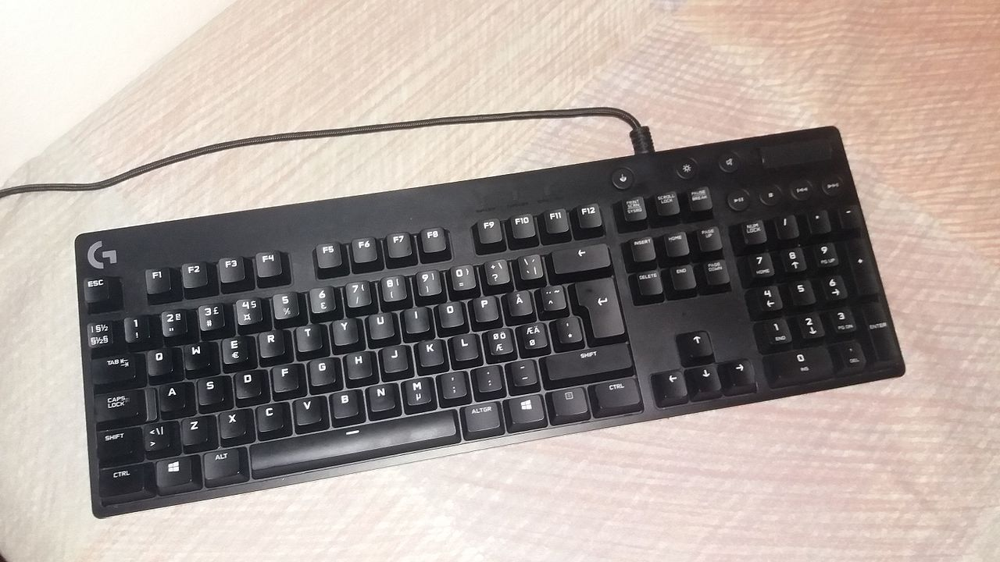

Näppäimistö on tiedon syöttämiseen tarkoitettu laite, joka koostuu sormilla painettavista näppäimistä. Näppäimistöjä on monissa teknisissä laitteissa, kuten tietokoneissa, kirjoituskoneissa ja laskimissa. Tietokoneiden näppäimistöt muistuttavat yleensä perusasettelultaan kirjoituskoneiden näppäimistöjä, mutta niissä on enemmän näppäimiä. Eri tietokoneperheissä käytetyt näppäimistöt eroavat jonkin verran toisistaan, mutta nykyisin erot ovat suhteellisen vähäiset. PC-tyyppisissä tietokoneissa on ollut käytössä kolme yleistä näppäimistöstandardia, joista nykyisin yleisimmässä on 105 näppäintä, mutta joissain uusimmissa malleissa voi olla vielä erityisiä lisänäppäimiä. PC-näppäimistöjä voi usein käyttää myös muissa koneissa. Ergonominen näppäimistö. Ergonomiseksi näppäimistöksi voidaan kutsua keskeltä taitettua mallia, jonka on tarkoitus vähentää ranteisiin kohdistuvaa rasitusta. lähde:wikipedia
